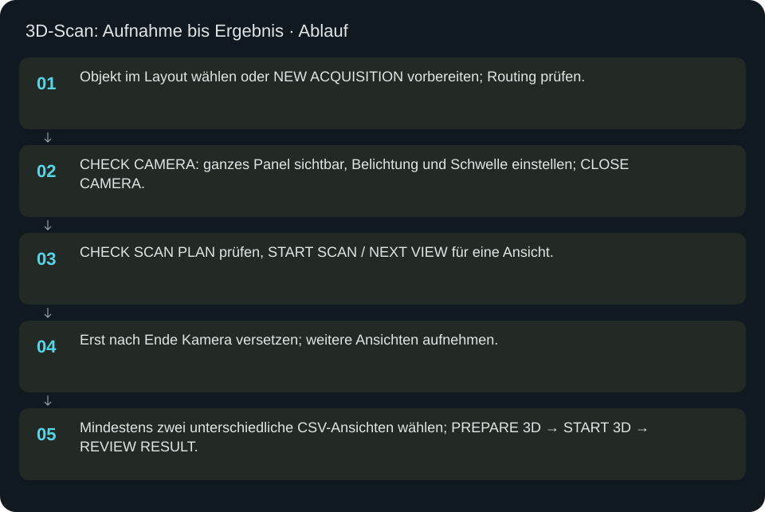
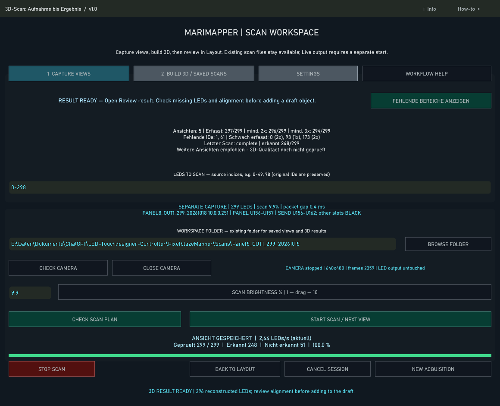

3D-Scan: Aufnahme bis Ergebnis
Jeder Scanlauf nimmt genau einen Kamerablick auf. Mehrere Ansichten ergeben die neue 3D-Geometrie.
In welcher Reihenfolge?
- Objekt im Layout wählen oder NEW ACQUISITION vorbereiten; Routing prüfen.
- CHECK CAMERA: ganzes Panel sichtbar, Belichtung und Schwelle einstellen; CLOSE CAMERA.
- CHECK SCAN PLAN prüfen, START SCAN / NEXT VIEW für eine Ansicht.
- Erst nach Ende Kamera versetzen; weitere Ansichten aufnehmen.
- Mindestens zwei unterschiedliche CSV-Ansichten wählen; PREPARE 3D → START 3D → REVIEW RESULT.


Schritt für Schritt
Vorbereitung
Ein bestehendes Panel aus Layout heraus scannen, damit Quell-IDs und Routing konsistent bleiben. Neue Aufnahme erst mit korrektem Controller, Portbereich und Anzahl vorbereiten. Andere Live-Ausgaben müssen aus sein. CHECK SCAN PLAN zeigt Ziel, Universen und Umfang; nach jeder relevanten Änderung erneut prüfen.
Kamera und Aufnahme
CHECK CAMERA öffnen. Das ganze Panel muss scharf und die einzelne LED eindeutig erkennbar sein. Belichtung ist kamerabhängig; -10 ist ein Beispiel, keine Garantie. CLOSE CAMERA gibt das Gerät frei. START SCAN nimmt einen Blick auf; während des Laufs nichts bewegen. STOP SCAN beendet einen fehlerhaften Lauf. Erst bei Abschluss Kamera zum nächsten Blick versetzen.
Rekonstruktion
In BUILD 3D / SAVED SCANS mindestens zwei tatsächlich verschiedene Ansichten auswählen. FIND MATCHING VIEWS hilft bei vorhandenen Aufnahmen; ADD VIEW CSV ergänzt gezielt. PREPARE 3D erstellt den geprüften Job, START 3D startet die Berechnung. REVIEW RESULT zeigt Abdeckung, fehlende IDs und Ergebnis. Kein automatischer Ersatz des aktiven Layouts.
Beispiel mit 299 LEDs
Neue Aufnahme mit Count 299 erzeugt lokale IDs 0–298. Drei Ansichten mit überlappender Sicht aufnehmen, ihre CSV-Dateien auswählen und rekonstruieren. Werden 296 Punkte erkannt, bleiben 3 IDs ungemessen. Fehlende IDs nachscannen oder schwarz lassen; die Adressierung bleibt 299 Plätze breit.
Wenn es nicht weitergeht
Kamera belegt: Vorschau oder andere Kamera-App schließen. Plan veraltet: CHECK SCAN PLAN erneut ausführen. Keine Punkte: Belichtung, Schwelle und Route prüfen. 3D-Jobfehler: Status und Arbeitsordner prüfen, vorhandene CSV-Dateien erhalten. Eine alte Ergebnisansicht ist kein Beleg für den zuletzt aufgenommenen Scan.
Eingaben & Beispiele
| Feld | Bedeutung | Beispiel |
|---|---|---|
camera | OpenCV-Gerätenummer; mit CHECK CAMERA prüfen. | 0 |
exposure | Kameraabhängige Belichtung; Vorschau entscheidet über brauchbare Werte. | -10 |
threshold | Detektionsschwelle 0–254; helle LED klar vom Hintergrund trennen. | 160 |
source_ids | Quell-IDs der vorbereiteten Aufnahme; global bei bestehendem Objekt, lokal bei neuer Aufnahme. | 0-298 |
anchors | Optionale Verifikationsanker; werden aufgenommen, aber nicht ersetzt. | 0,20,40 |
views | Pfade vorhandener 2D-CSV-Ansichten, getrennt durch |. | C:/Scans/view1.csv | C:/Scans/view2.csv |
workspace | Vorhandener Arbeitsordner für Aufnahmen und Rekonstruktion. | C:/Scans/panel8 |
python | Installierter Python-Interpreter für die Offline-Rekonstruktion. | C:/path/to/python.exe |
packet_gap | Abstand zwischen Netzwerkpaketen in ms, 0–2. | 1 |
brightness | Scanhelligkeit in Prozent, 1–10; nicht Faktor 0–1. | 5 |
Numerische Eingaben verwenden einen Punkt als Dezimaltrennzeichen. IPs, Pfade, Quellstarts und Universen zuerst mit der tatsächlichen Installation vergleichen.
Woran erkenne ich Erfolg?
Die erwartete Ansicht öffnet, Status und Vorschau entsprechen der gewählten Aktion, und es erscheint kein Fehler. Änderungen beim nächsten Laden beziehungsweise im Live-Status erneut lesen. Ein erfolgreicher Bildschirmtest beweist weder physische LED-Ausgabe noch korrekte Kameramessung.
Quellennachweis
Dateipfade im Projekt-Repository; die Onlinehilfe gibt keinen allgemeinen Dateisystemzugriff frei.
pixelblaze_mapper/build_scan_session_ui.pypixelblaze_mapper/guided_scan_live.pypixelblaze_mapper/scan_result_review.py
Dialog: /project1/guided_scan/ui_panel